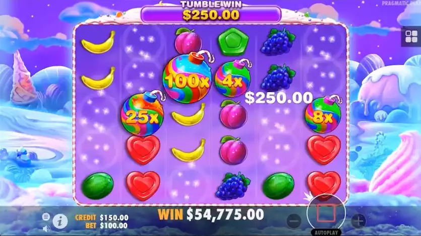

What each published figure measures, and which values are disputed.
🔞 18+ only · Real-money
gambling
RTP 96.48%Multipliers up to 100x6x5 scatter pays10 free spinsPragmatic Play18+
Sweet Bonanza publishes three separate figures that players look up
by name: the maximum win multiplier, the theoretical return to
player, and the volatility rating. They answer different questions,
and two of them are routinely misquoted. This page explains what
each figure measures, which values are in dispute, and where to
verify the number that applies to you.
Maximum win multiplier
Maximum win is expressed as a multiple of your stake, and it is a
cap rather than an expectation. It records the largest payout the
maths model can produce, which almost no session reaches.
Pragmatic Play does not print a maximum win figure for the base
game on its
official game page, and third-party sources disagree, quoting both 21,100x and
21,175x. We do not pick one. The figure that counts is the one in
the paytable of the build you are playing.
Related titles publish their own caps. The official Sweet Bonanza
1000 page states wins of up to 25,000x, and Super Scatter queries
cite 50,000x again. This is exactly why a figure must never be
carried from one release to another.
Sweet Bonanza 1000 publishes its own max win, and the comparison sits on its own page.
Return to player
What RTP actually means. Return to player is a theoretical
long-run average measured across many millions of simulated spins,
not a promise about your session. An RTP figure of around 96
percent does not mean you get 96 percent of your stake back today.
Short sessions on a high volatility slot swing far above and far
below the published number. Operators may also license more than
one RTP configuration of the same game, so the figure shown inside
the game information panel at your operator is the only figure
that applies to you. Check it before you play.
For Sweet Bonanza, Pragmatic Play publishes an RTP of
96.48% on its official game page. That is the
provider's own number for the reference build.
The RTP figures currently in circulation
Search demand contains three distinct RTP values for the same
game: 96.48, 96.5 and 96.51. The provider prints 96.48, so the
other two are almost certainly rounding, a figure copied from a
revised game sheet, or an operator running a lower licensed
configuration. That spread is normal in slots reporting, and it is
also why an RTP number copied from a third party page is not
evidence. Open the game information panel at your own operator and
read the figure there.
Volatility and what it feels like
Pragmatic Play does not print a volatility rating for this title
on its game page. The structure behaves as high volatility: wins
arrive less often but can be much larger when they do, so a
bankroll drains in long quiet stretches and then swings sharply on
a single tumble chain. Practically, that means a smaller stake for
a longer session, and no expectation that a losing run is due to
correct itself. It never is.
Multiplier symbols and how the big multipliers build
Multiplier symbols, referred to in searches as multiplier bombs,
land during the free spins round and apply to the total of a
completed tumble chain. On the base game Pragmatic Play states
that these symbols are worth up to 100x, and that four to six
lollipop scatters start the bonus round with 10 free spins. That
structure is the reason the maximum win sits so far above a
typical result: it requires a long chain and several high
multiplier values inside the same round. It also explains why base
game spins and free spin rounds behave so differently.

Multiplier symbols apply to a completed tumble chain.
Why the numbers differ between Sweet Bonanza versions
Sweet Bonanza, Sweet Bonanza 1000, Sweet Bonanza Xmas, Super
Scatter and Sweet Bonanza Dice are separate slot releases and each
has its own RTP, volatility rating and maximum win. The gap is
real and measurable: the base game is published at 96.48%, while
the official Sweet Bonanza 1000 page states 96.53% with wins of up
to 25,000x and multiplier symbols reaching 1,000x inside its bonus
round. Sweet Bonanza Candyland is a live game show and is not
measured the same way at all, because its returns are published
per bet type rather than as one slot-style figure. Quoting a figure
across products is the single most common factual error on this
topic.
Sweet Bonanza RTP and max win FAQ
What is the Sweet Bonanza max win?
Maximum win is published as a multiple of your stake and
functions as a ceiling on the maths model, not a target.
Pragmatic Play does not print one for the base game on its
official game page, and third-party sources quote both 21,100x
and 21,175x, so read the figure in the paytable of the build
you are playing.
What is the Sweet Bonanza RTP?
Pragmatic Play publishes 96.48% on its official game page.
Values of 96.5 and 96.51 also circulate in search, which is
rounding or a different licensed configuration. Operators can
license a lower one, so the figure in your own in-game
information panel is the one that applies to you.
Does a high RTP mean I will win?
No. RTP is a theoretical long-run average calculated across
many millions of simulated spins. It says nothing about a
single session. On a high volatility slot, real results sit far
above and far below the published percentage for long
stretches.
Is Sweet Bonanza high or low volatility?
Pragmatic Play does not print a volatility rating on its game
page. The structure behaves as high volatility: wins arrive
less often but can be much larger, so expect long quiet
stretches. The practical response is a smaller stake over a
longer session, never a larger stake to recover a losing run.
What are the multiplier bombs in Sweet Bonanza?
Multiplier symbols worth up to 100x land during the free spins
round and apply to a completed tumble chain. They are the
reason the maximum win multiplier sits so far above typical
results, because the cap needs a long chain and several high
multipliers in one round.
Does Sweet Bonanza 1000 have the same RTP and max win?
No. Sweet Bonanza 1000 is a separate release with its own
published figures. Pragmatic Play states an RTP of 96.53% and
wins of up to 25,000x for it. Read the figures on the dedicated
Sweet Bonanza 1000 page rather than carrying numbers across
products.
Can a tracker or statistics tool predict the next payout?
No. Every spin is produced by a certified random number
generator that is seeded independently of previous results,
your balance and your stake. Tools that sell upcoming results,
hot windows or payout timing cannot do what they claim.
18+ only. Gambling involves financial risk and is not a way to
make money. Play responsibly and never bet more than you can
afford to lose. If gambling stops being fun, seek help: GamCare
(gamcare.org.uk), BeGambleAware (begambleaware.org), or the
1-800-GAMBLER helpline.
Affiliate disclosure: some links on this page are affiliate links.
If you sign up through them we may earn a commission at no extra
cost to you. This never affects our assessments. Commercial
availability and terms are set by the operators.
By
Ryan Murton, Growth & Product covering crash and casino games for 7
years. Last updated:
. See our editorial
approach on the About page.